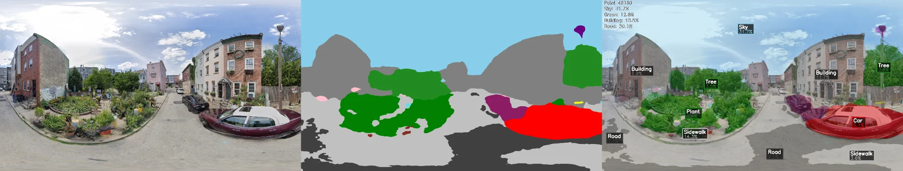
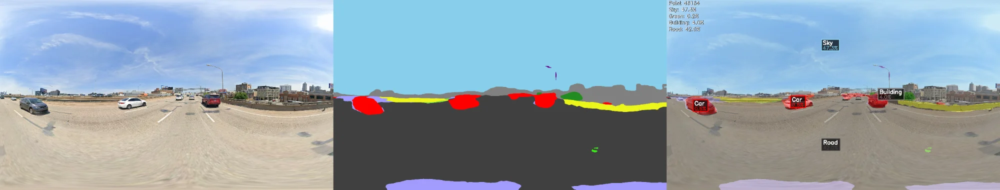

Semantic Segmentation
Extracting Urban Visual Features from Street View Imagery
From Pixels to Meaning
A street view image contains rich information about the urban environment, but raw pixel values tell us nothing directly useful. What we need is a way to answer questions like: How much of this scene is sky? How much is vegetation? Is this a car-dominated environment or a pedestrian-friendly one?
Semantic segmentation transforms images into meaningful categories, labeling every pixel with what it represents—sky, tree, building, road, car, person. This transformation is the bridge between visual data and quantitative analysis.
Why SegFormer?
We selected SegFormer-B0 (Xie et al., 2021) after considering several alternatives. The model is pre-trained on ADE20K, a dataset containing 150 semantic classes with excellent coverage of urban scenes. The B0 variant represents the smallest in the SegFormer family, but for our purposes this is a feature rather than a limitation: processing ~40,000 images demands efficiency, and SegFormer-B0 delivers roughly 2 images per second on a mid-range GPU while using only ~4GB of VRAM.
#| eval: false
from transformers import SegformerForSemanticSegmentation, SegformerImageProcessor
import torch
# Load pre-trained model
model_name = "nvidia/segformer-b0-finetuned-ade-512-512"
processor = SegformerImageProcessor.from_pretrained(model_name)
model = SegformerForSemanticSegmentation.from_pretrained(model_name)
# Check available device
device = torch.device('cuda' if torch.cuda.is_available() else 'cpu')
model = model.to(device)
model.eval()While newer models might achieve marginally higher accuracy on benchmarks, SegFormer’s transformer-based architecture proves robust across diverse urban scenes—from tree-lined residential streets to concrete highway interchanges. For tens of thousands of images, practical considerations outweigh small accuracy differences.
Defining Urban Categories
ADE20K provides 150 fine-grained classes, far more granularity than we need. For urban happiness analysis, we aggregate these into 6 meaningful categories:
#| eval: false
class UrbanFeatureExtractor:
"""
Extract urban environmental features from semantic segmentation results.
Aggregates ADE20K's 150 classes into 6 urban-relevant categories.
"""
def __init__(self):
# ADE20K class indices for each urban category
self.categories = {
'sky': [2], # sky
'vegetation': [4, 9, 17, 66, 72], # tree, grass, plant, palm, flower
'building': [1, 25, 48, 84], # building, house, skyscraper, booth
'road': [6, 11, 52], # road, sidewalk, path
'vehicle': [20, 80, 83, 102, 127], # car, bus, truck, van, bicycle
'person': [12] # person
}
# Colors for visualization (RGB)
self.colors = {
'sky': [135, 206, 235], # Light blue
'vegetation': [34, 139, 34], # Forest green
'building': [128, 128, 128], # Gray
'road': [64, 64, 64], # Dark gray
'vehicle': [255, 0, 0], # Red
'person': [255, 192, 203] # Pink
}
def calculate_ratios(self, segmentation_map):
"""
Calculate the proportion of each category in the image.
Parameters:
-----------
segmentation_map : numpy array
2D array of class predictions (H x W)
Returns:
--------
dict : Category ratios (values sum to less than 1.0 due to uncategorized pixels)
"""
total_pixels = segmentation_map.size
ratios = {}
for category, class_ids in self.categories.items():
# Count pixels belonging to this category
mask = np.isin(segmentation_map, class_ids)
pixel_count = np.sum(mask)
ratios[f'{category}_ratio'] = pixel_count / total_pixels
# Green View Index is a common metric
ratios['green_view_index'] = ratios.pop('vegetation_ratio')
return ratiosThe rationale behind these groupings reflects both practical and theoretical considerations. Sky remains a single class because it represents a unified visual experience—the sense of openness that comes from seeing unobstructed sky. Vegetation combines trees, grass, and plants because prior research on Green View Index treats all greenery similarly for psychological impact (Asgarzadeh et al., 2012). Buildings includes multiple structure types because we care about overall built environment density, not architectural distinctions. Road encompasses sidewalks and paths as collective transportation infrastructure.
The remaining pixels—furniture, signage, water, and other elements—typically constitute 5-15% of any given image.
Processing Pipeline
Single Image Segmentation
#| eval: false
import cv2
import numpy as np
from PIL import Image
def segment_image(image_path, model, processor, device):
"""
Perform semantic segmentation on a single street view image.
Returns both the segmentation map and calculated feature ratios.
"""
# Load and prepare image
image = cv2.imread(str(image_path))
image_rgb = cv2.cvtColor(image, cv2.COLOR_BGR2RGB)
pil_image = Image.fromarray(image_rgb)
# Process through model
inputs = processor(images=pil_image, return_tensors="pt")
inputs = {k: v.to(device) for k, v in inputs.items()}
with torch.no_grad():
outputs = model(**inputs)
logits = outputs.logits
# Upsample to original resolution
h, w = image.shape[:2]
upsampled = torch.nn.functional.interpolate(
logits,
size=(h, w),
mode='bilinear',
align_corners=False
)
# Get class predictions
segmentation = upsampled.argmax(dim=1).squeeze().cpu().numpy()
return segmentation, imageSegFormer processes images at 512×512 pixels internally, but our panoramas are 3328×1664. Upsampling predictions back to original resolution using bilinear interpolation preserves smooth boundaries between semantic classes while allowing us to calculate accurate pixel proportions.
Batch Processing at Scale
For the full dataset of ~40,000 images, batch processing reduces total computation time from over 100 hours to approximately 4 hours on a single GPU. The key optimizations: multi-threaded data loading (num_workers=4) allows the CPU to prepare batches while the GPU processes, pin_memory=True speeds up CPU-to-GPU transfer, and we start with batch_size=8, reducing if memory errors occur.
#| eval: false
from torch.utils.data import Dataset, DataLoader
class GSVDataset(Dataset):
"""Custom dataset for batch processing street view images."""
def __init__(self, image_list, processor):
self.image_list = image_list
self.processor = processor
def __len__(self):
return len(self.image_list)
def __getitem__(self, idx):
img_info = self.image_list[idx]
image = cv2.imread(img_info['path'])
image_rgb = cv2.cvtColor(image, cv2.COLOR_BGR2RGB)
inputs = self.processor(images=image_rgb, return_tensors="pt")
return {
'pixel_values': inputs['pixel_values'].squeeze(),
'pano_id': img_info['pano_id'],
'point_id': img_info['point_id'],
'height': image.shape[0],
'width': image.shape[1]
}Quality control: we track failed images (corrupted downloads, unusual dimensions) and log them for manual review. In our run, fewer than 0.5% of images failed processing.
What the Data Reveals
After processing all images, we can compare the visual characteristics of happiness points against baseline road samples:
#| eval: false
import pandas as pd
from scipy import stats
def compare_distributions(df):
"""
Statistical comparison of visual features between groups.
"""
happy = df[df['is_happy'] == 1]
other = df[df['is_happy'] == 0]
features = ['sky_ratio', 'green_view_index', 'building_ratio',
'road_ratio', 'vehicle_ratio', 'person_ratio']
results = []
for feat in features:
h_mean = happy[feat].mean()
o_mean = other[feat].mean()
# Independent samples t-test
t_stat, p_value = stats.ttest_ind(
happy[feat].dropna(),
other[feat].dropna()
)
results.append({
'feature': feat,
'happy_mean': h_mean,
'other_mean': o_mean,
'difference': h_mean - o_mean,
't_statistic': t_stat,
'p_value': p_value,
'significant': p_value < 0.05
})
return pd.DataFrame(results)| Feature | Happy Mean | Other Mean | Difference | p-value |
|---|---|---|---|---|
| sky_ratio | 0.285 | 0.216 | +0.069 | 0.001** |
| green_view_index | 0.152 | 0.149 | +0.003 | 0.847 |
| building_ratio | 0.213 | 0.188 | +0.025 | 0.034* |
| road_ratio | 0.196 | 0.223 | -0.027 | 0.048* |
| vehicle_ratio | 0.023 | 0.031 | -0.008 | 0.156 |
| person_ratio | 0.008 | 0.011 | -0.003 | 0.423 |
The results tell an interesting story. Sky visibility is significantly higher at happiness points—nearly 7 percentage points more than the city average. This aligns with research on the psychological benefits of open views and natural light. Building ratio is also higher, suggesting happiness points cluster in denser urban areas with more amenities rather than sparse residential neighborhoods. Meanwhile, road coverage is lower, potentially indicating more pedestrian-friendly environments.
Perhaps most surprising: green view index shows no significant difference. Vegetation is fairly uniform across Philadelphia, or perhaps small patches of greenery don’t meaningfully differentiate happy from ordinary locations. This finding warrants further investigation.
Visualizing Segmentation Results
For quality assurance and interpretability, we generate visualizations showing the original panorama alongside its semantic segmentation:
#| eval: false
def create_visualization(original_image, segmentation, feature_extractor, point_id):
"""
Create a side-by-side visualization of original image and segmentation.
"""
h, w = segmentation.shape
# Create colored segmentation mask
color_mask = np.zeros((h, w, 3), dtype=np.uint8)
for category, class_ids in feature_extractor.categories.items():
mask = np.isin(segmentation, class_ids)
color = feature_extractor.colors[category]
color_mask[mask] = color
# Create overlay
color_mask_bgr = cv2.cvtColor(color_mask, cv2.COLOR_RGB2BGR)
overlay = cv2.addWeighted(original_image, 0.6, color_mask_bgr, 0.4, 0)
# Combine: original | segmentation | overlay
combined = np.hstack([original_image, color_mask_bgr, overlay])
return combinedFour Environments, Four Stories
Urban Park — High Happiness Score

This happiness point features abundant vegetation (dark and light green), significant sky visibility (blue), moderate building presence (gray), and pedestrian-friendly paths (light gray). The Green View Index exceeds 23%, and sky ratio surpasses 24%—both well above city averages. Open, green, and human-scaled: this exemplifies the “ideal” happy place.
Community Garden — High Happiness Score

A residential street with a vibrant community garden. The segmentation captures vegetation from the garden and street trees (green), row houses (gray), moderate sky visibility, and limited road surface. The presence of visible human-scale elements—plants, stoops, small buildings—creates an intimate, inviting atmosphere.
Commercial District — Moderate Score

A typical University City commercial street. Building ratio is high (~22%), sky visibility moderate, with notable vehicle presence (red). Curved building facades and street trees provide visual interest, but significant road coverage (~42%) and parked vehicles reduce the happiness score compared to pedestrian-oriented spaces.
Highway Infrastructure — Low Score

This location exemplifies features our model associates with low happiness: dominant road coverage (~42%), multiple vehicles, minimal vegetation (only 0.2% green). Despite high sky visibility (57%), the environment feels hostile to pedestrians. Even with open sky, a space designed for vehicles rather than people scores poorly.
The Pattern in Numbers
| Location | Sky | Green | Building | Road | Vehicle |
|---|---|---|---|---|---|
| Urban Park | 24.3% | 23.8% | 2.0% | 25.1% | 0.0% |
| Community Garden | 31.2% | 12.8% | 33.5% | 30.1% | 1.8% |
| Commercial District | 22.5% | 4.1% | 21.9% | 42.6% | 3.2% |
| Highway | 57.5% | 0.2% | 3.0% | 42.0% | 4.5% |
Happiness points have more greenery, less road, and less vehicle presence—regardless of sky ratio.
Limitations Worth Noting
Our feature extraction has limitations that affect interpretation. We measure simple sky pixel proportion rather than the more sophisticated Sky View Factor (SVF) that accounts for hemispherical projection and better represents human perception of “openness.” Images capture a single moment—time-of-day, seasonal, and weather variations go unmeasured. Objects in the foreground may occlude important background features: a parked truck could hide a beautiful park. And SegFormer occasionally misclassifies objects, particularly at boundaries or for unusual urban elements like street art or construction zones.
What We’ve Learned
This stage transformed ~40,000 street view images into a structured dataset of 6 visual features per location. Happiness points have significantly more sky visibility and higher building density, but less road coverage—suggesting pedestrian-friendly, vibrant urban environments rather than quiet residential streets or car-dominated corridors.
These visual features, combined with Census socioeconomic data, form the input for our PU Learning model.